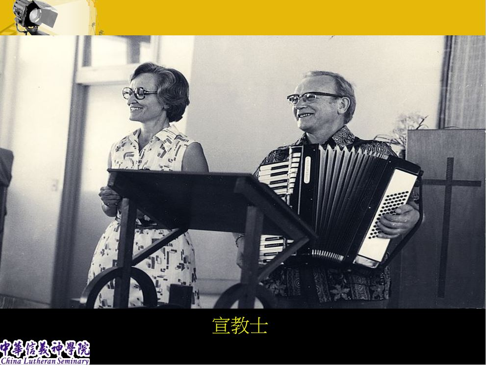
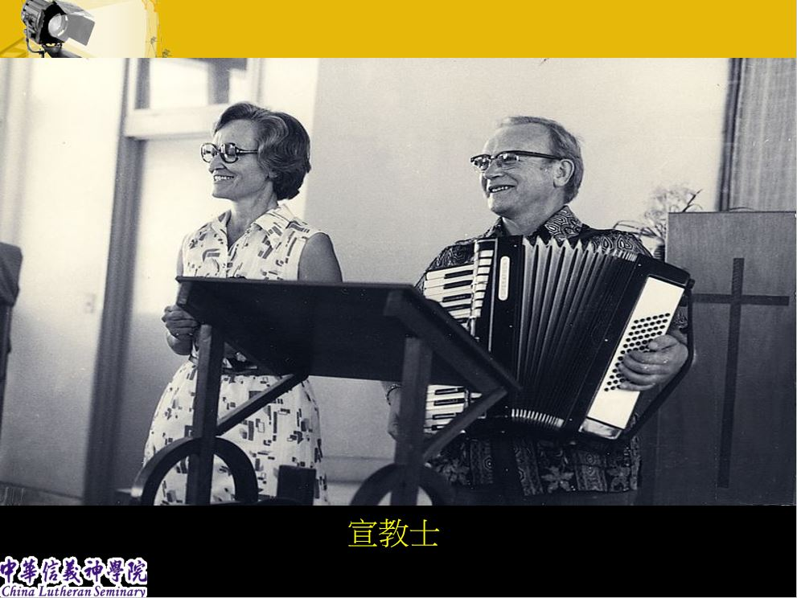

披荊斬棘的第一個十年 (1966~1976)
 

記憶拼圖
您的身影在信神駐足過嗎？您的生命跟信神交會過嗎？也許只是輕輕的一片雲彩，也許是深刻的烙印，但都是信神歷史的一部份。今年為信神50週年校慶，特舉辦校慶徵文活動，期盼能募集所有信神人的校園甘苦談，共同記錄校園生活點滴，透過不同片段，呈現信神的風貌。
邀請所有廣義的信神人，包括現就讀(任職)或曾就讀(任職)的學生、校友，老師，同工，以及認識信神的弟兄姊妹投稿。我們期盼能募集五十篇校園記憶，談談信神的生活、或經驗，題材不拘、聖俗不忌。任何有關信神的故事都可以寫作。
徵文方式
1. 每人限投稿一篇，形式不拘，散文、新詩、漫畫…皆可投稿，字數1200字以內。
2. 請提供word電子檔，A4、橫排、細明體、字級12級，作品投稿請以Email方式寄至企劃部promoting@cls.org.tw，電子郵件主旨為「信神50週年校慶徵文投稿」，信件中請註明姓名，所屬教會或機構。
3. 文稿經審稿採用者，將輪流刊登於學院五十週年主題網頁，並致送精美小禮物一份。
4. 截稿日期：即日起至10月20日止(輪流刊登)
注意事項
1. 投稿文章須為未發表或未刊登，勿一稿多投。須親自創作，無抄襲、複製、剽竊、侵害他人之著作，若有發生侵害第三人權利之行為，導致校方權利受損，投稿者須全權負擔損害賠償責任。如有圖文涉及他人著作權，須先徵得原作者或出版者同意，並附同意書證明。
2. 主辦單位保有修改、變更或暫停本活動之權利，如有未盡事宜，悉依主辦單位相關規定或解釋辦理，並得隨時補充公告之。
今年為信神50週年院慶，特舉辦影片徵求活動，將您的教會/機構事工/會友族群透過短片呈現特色，一起見證基督的豐盛，鼓勵和祝福信神的事奉。即日起，只要您（個人）或教會（團體）提供影片，就有機會獲得信神出版社系列套書！
活動方式
1. 影片內容不拘，影片長度限定在二分鐘內。
2. 為符合最佳視覺效果，拍攝時請用橫式，解析度為1280x720以上。
3. 將影片上傳至Youtube或網路空間，把網址寄至promoting@cls.org.tw，信件標題為【我要祝福信神】，來信請註明姓名，所屬教會或機構，聯絡電話。
4. 收件截止日為7月22日止
5. 八月份將進行為期一個月的網路票選評選活動，前三名者即可獲得信神出版社系列套書，並於9月的祝福影展中舉行頒獎典禮。
6. 若有問題，歡迎電洽03-5710023分機3114企劃部楊心怡
今年為信神50週年校慶，特舉辦校慶活動標語徵選活動，廣徵學院大內高手、才子才女，發想簡明具信義宗核心理念，且具代表性之信神50週年校慶標語，以作為信神50週年校慶系列活動之標語。
徵選方式
1. 參加對象：校內師生同工，每人限投稿一件。
2. 標語：中文標語字數限12字以內。
3. 作品投稿請以Email方式寄至企劃部promoting@cls.org.tw
4. 收件日期：即日起至3月25日止
5. 標語由全校師生同工採不記名投票方式評選，得獎作品將於3月31日公告。
6. 為鼓勵投稿，凡投稿者可獲得精美小禮物一份;得獎作者可獲得咖啡卷一本。